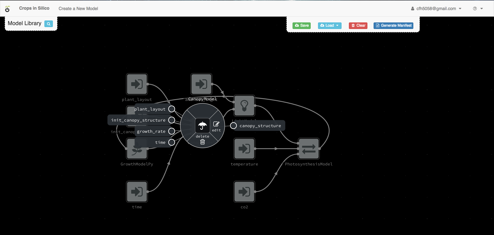
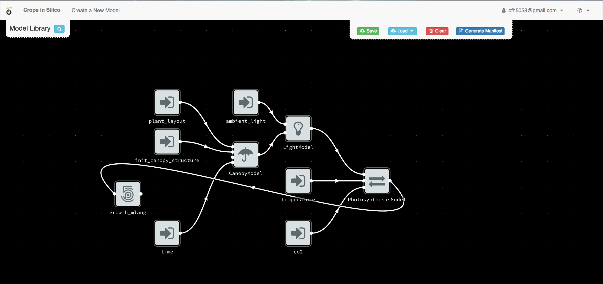

Connecting Models to Models¶
Next we will connect your growth model to an existing network of models. From
the user interface, load the hackathon2018 integration network.

You will see a network of 4 models connected to 6 input files.

By right clicking on each model, you can get information about the model’s inputs and outputs.
Model Overview¶
The canopy model takes as input an initial canopy structure, a growth rate, a plant layout describing how the plant grows in x, y, and z, and a time step. From this information it grows the canopy structure and outputs the updated structure. The canopy model is written in C++.
The light model takes as input an ambient light level and the 3D structure of the canopy. It then calculates the light incident on each facet of the canopy structure which it outputs.

The photosynthesis model takes as input a light intensity, temperature, and CO2. From this information, it calculates and output the photosynthesis rate.

The growth model in this network is an alternative to the growth model we were working with in the previous section. It takes photosynthesis rate as an input and outputs the growth rate. We will be replacing this growth model with the one you created.

You can trace the data as it flows from files and from one model to the next.
Replacing the Growth Model¶
For the next exercise, we will replace the existing growth model, with the one you just created.
Deleting the Old Model¶
By right-clicking on the existing growth model, you can delete the existing model from the canvas.

Adding Your Model¶
You can then add your model by clicking the blue + button next to your
model in the model palette.

Once the model is added to the canvas, move it to the left of the canvas.

Making Connections¶
Now we want to connect our growth model to the other models in the network. First we connect the input dot (on the left side) for our growth model to the output from the photosynthesis model.

To make the connection, click on one dot and then the other.
Next we connect the output from our growth model to the growth rate input channel of the canopy model, by again clicking on one dot and then the other.


Creating the YAML¶
Once you have finalized your model connections, you can use the interface to
create your YAML file by clicking the Generate Manifest button,

Copy this information to you clipboard and past it into a new file
called growth_network.yml in the cis_home directory.
Running the Model-to-Model Integration¶
You can run the integration you just created by executing:
$ cisrun growth_network.yml
from the cis_home directory. This will output information on the
screen from all of the models being run.